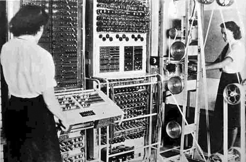

Machine CodeIn de jaren 40 van de vorige eeuw verschenen er voor het eerst computers het waren gigantische elektronische kasten (FOTO), die in vergelijking met nu extreem traag waren. Deze computers hadden geen geheugen waar ze geschreven programma’s in konden opslaan. Om deze computers te programmeren moesten de programmeurs fysieke schakelaren overhalen om de statussen van de bits te veranderen. Dit kostte de programmeurs natuurlijk ontzettend veel tijd en als het programma niet werkte kreeg je geen gedetailleerde foutmelding dus het debuggen van de code was ongelofelijk moeilijk.Daarom bedachten de programmeurs een manier om makkelijker programma’s te kunnen schrijven namelijk ‘Machine Code’. Machine Code kan direct worden uitgevoerd op de processor van de computer. Elke processor of familie processors heeft zijn eigen set instructies een voorbeeld van een instructie kan zijn voeg de waarde van adres 1 toe op adres 2. |
 | ||
De manier waarop machine code werd geschreven was nog steeds erg abstract.
De opdrachten werden namelijk in getallen geschreven. Deze getallen konden bijvoorbeeld in binaire, decimale of hexadecimale vorm worden geschreven.
Om een instructie te schrijven moest men eerst de instructie die je wilde gebruiken aanroepen.
Dit werd gedaan door de opcode van de instructie te typen als je bijvoorbeeld de instructie mov, die een bepaalde waarde in een specifiek register laad, wil gebruiken dan moet je de opcode voor de instructie typen voor intel processors is de opcode van de instructie mov 10110.
Na de opcode moet je aangeven in welk register je een waarde wil laden.
Dit doe je door het adres aan te geven, elk register heeft zijn eigen adres dit kan bijvoorbeeld het 3-bit adres 000.
Als men bijvoorbeeld een waarde in adres 000 willen laden ziet de machine code er zo uit: 10110000.
De 3 bits na de opcode geven dus het adres van het register aan.
Het laatste wat je nog moet specificeren is wat voor waarde je in adres 000 wilt laden.
Stel dat je het getal 42 in het adres wilt laden dan moet je dat getal eerst omzetten naar een binair getal, 42 in binair is 101010.
Dus de volledige instructie die je moet invoeren in machine code luid: 10110000 101010.
Deze instructies op zichzelf zijn heel simpel, maar in combinatie met elkaar kunnen ze hele complex dingen berekenen en uitvoeren.
Een website met alle x86 opcodes.
Door machine code werd de baan van programmeur een stukje makkelijker gemaakt.
De programma’s konden via een papieren of magnetische tape in de computer worden ingevoerd.AssebleertaalHoewel machine code al een stuk overzichtelijker was, was het nog steeds niet echt goed leesbaar voor mensen. Daarom was de volgende stap een echte leesbare programmeertaal, deze taal heet assembleertaal. Assembleertaal lijkt heel erg op machine code want elke instructie komt één op één overeen met een opcode in machine taal. Assembleertaal wordt daarom ook wel een low-level-programming language genoemd, omdat de opdrachten direct overeenkomen met opdrachten in machine code. Verder heeft assembleer taal een structuur die te vergelijken is met die van machine taal. Assembleertaal gebruikt zogeheten mnemonics die opcodes voorstellen. Elke mnemonic komt overeen met één of soms zelfs meerdere opcodes. In het tweede gevallen bepalen de operands (de manupileerbare waarden achter de mnemonic) welke opcode wordt bedoeld. Omdat de processor natuurlijk geen teksten kan interpreteren moeten de instructies geschreven in assembleer taal omgezet worden in daadwerkelijke machine code. Dit is de taak van een stuk software dat de assembler heet. Dit is ook gelijk een ander voordeel van assembleer taal. Er kunnen meerdere syntax bestaan, omdat het resultaat van beide assemblers uitkomt op dezelfde machine code.Stel dat we de eerder genoemde instructie 10110000 101010 in assembleertaal willen schrijven. Hoe schrijf je dat in assembleer taal? In assembleer taal schrijf je dat als volgt: mov AL, 2a. Het eerste stukje (mov) is de mnemonic voor de instructie die een getal in een bepaald register laad in dit geval register AL, dat is dus het tweede stukje. Het laatste stukje (2a) is het getal dat we in register AL willen laden; 2a is het hexadecimale getal voor 42. |
|||